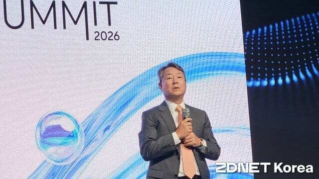

김봉균 KT클라우드 대표 "5년 내 AI 데이터센터 1GW 추가 공급


KT클라우드가 클라우드와 인공지능 데이터센터(AIDC)를 양대 축으로 AI 전환(AX) 인프라 사업 확대에
박차를 가한다. 자체 클라우드 플랫폼을 기반으로 공공에서 쌓은 기술·운영 경험을 민간으로 넓히는 동시에,
실수요를 기반으로 향후 5년간 1기가와트(GW) 규모 AIDC를 추가 공급한다는 목표다.